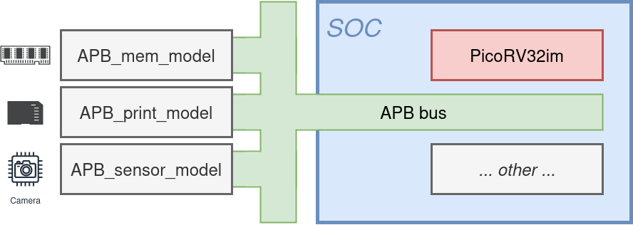
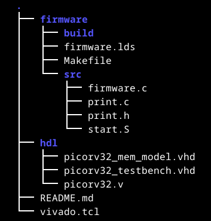

The project within this course will have you designing an SOC that encodes sensor data to a QOI encoded image. As it would not be realistic to build the entire system, a number of compents will only be simulated:

This project is to be achieved in two steps:
This first version (SW-only) will set the playing level. Additionally, this will help you in understanding the encoding scheme. The result of the first version will be a working implementation. This will allow you to run the numbers (latency, resource usage, throughput, …).
When the first version is done, you choose which optimisations you’re going to make. After these optimisations are approved, you’ll set of to make the HW/SW codesign. You can use which ever technique you think is best for obtaining your optimisations.
Below you can find a number of resources that might come in handy.
Handing in exercises
When you upload your assigments, check the following:
• all your files are archived in one single file (.zip, .tar, …)
• structurise your files in subfolders
• firmware/ containing all the software: build files, binaries, …
• firmware/src/ containing all the source files (.c, .S, …)
• hdl/ containing all the hardware descriptions (.vhd, .v, .sv, …)
• hdl/tb/ containing all the simulation files (.vhd)
• files like a README.md, vivado_script.tcl, …
• README.md: if you want to add some additional info
• vivado.tcl: script to automate project creation in Vivado

If you look at the structure of how you need to hand in assignments, you might spot something. These are all plain text files and there are not many of them. However, this will enable you to generate all data you need: binaries, hex-files, vivado projects, bitstreams, …
In case you want to use some version control (like GitHub), it would make sense to track only these files.